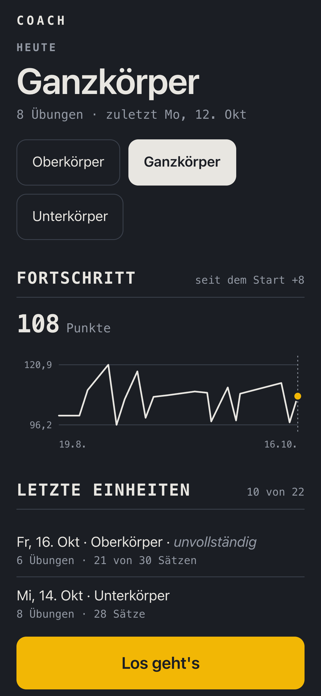
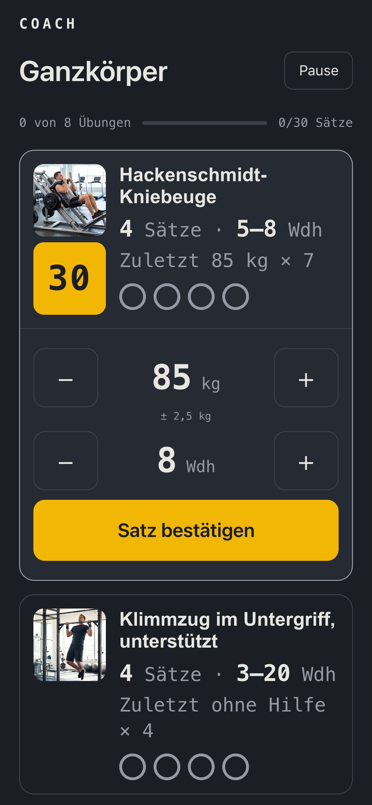
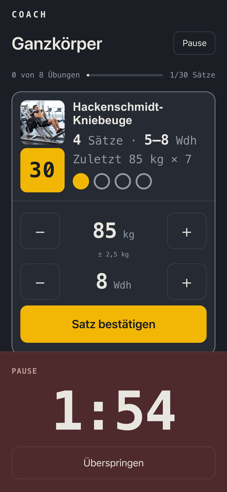
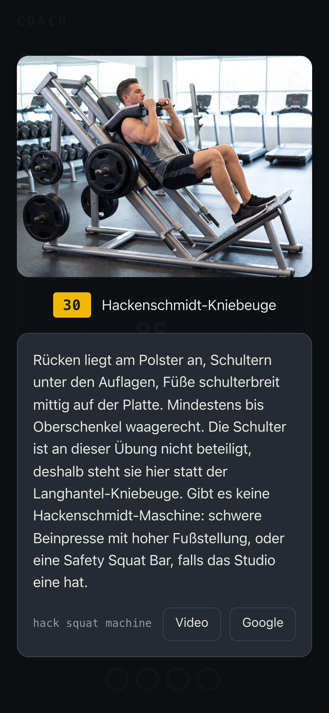
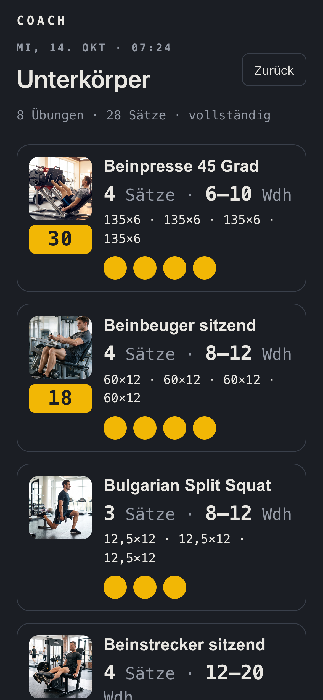
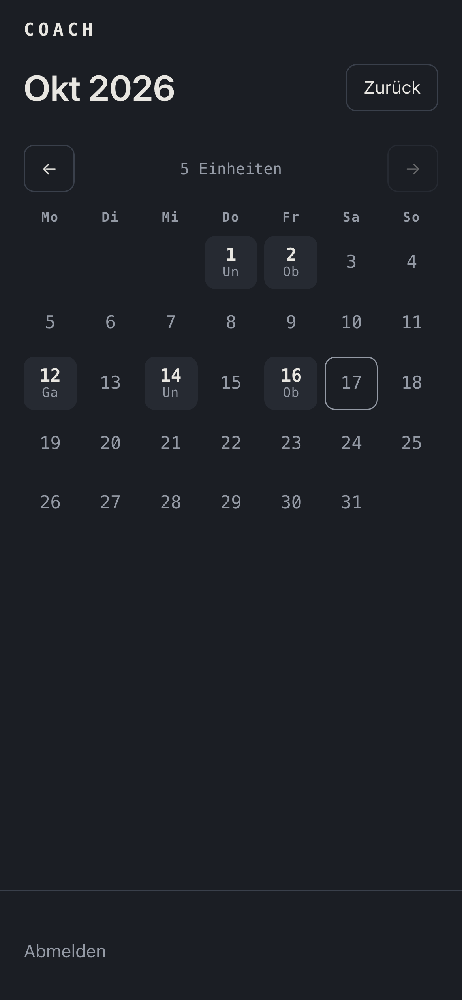
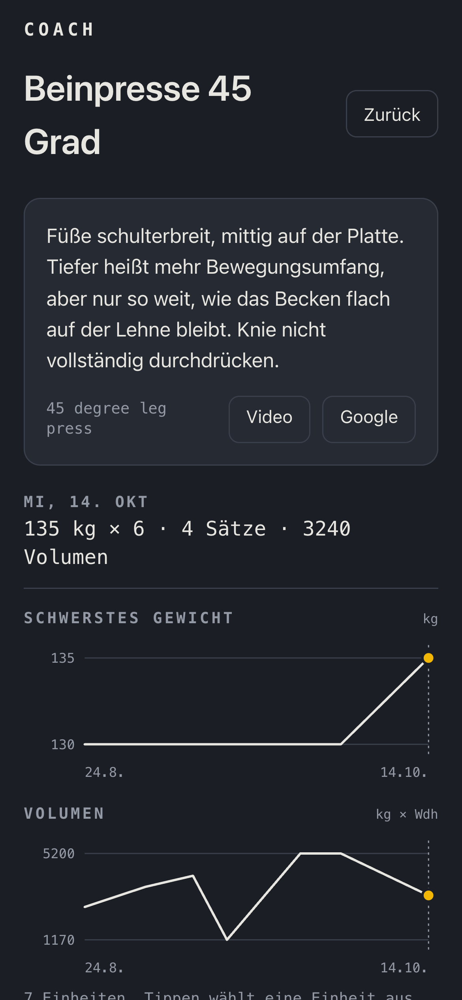
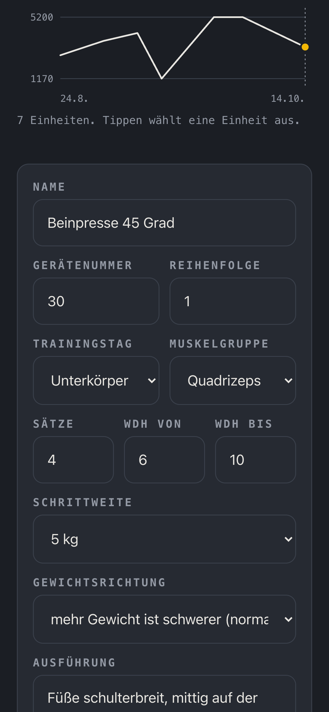
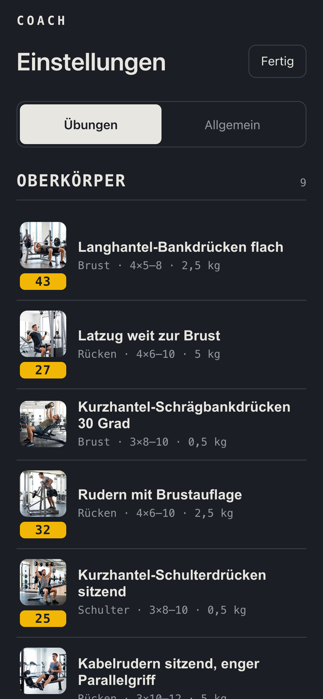
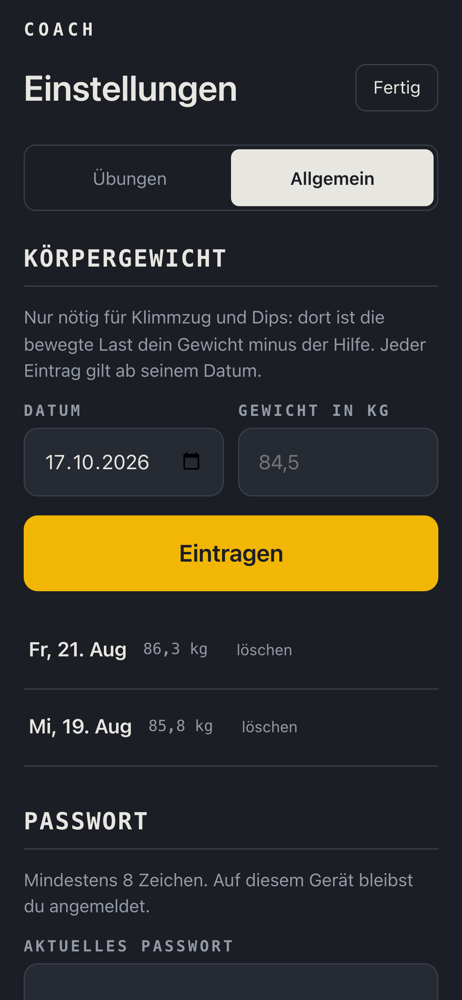

Die Trainings-App, die auch offline weiterarbeitet
Coach führt dich durch jede Einheit im Studio, speichert jeden Satz sofort und sagt dir, wann das Gewicht hochgeht.
Einzige Systemvoraussetzung: ein Webserver mit ≥ PHP 8.0 und HTTPS










Gebaut für das Studio, nicht für das Sofa.
Im Studio hast du schlechten Empfang, verschwitzte Finger und zwei Minuten Pause. Darauf ist jede Ansicht ausgelegt.
- Läuft ohne NetzJeder Satz liegt zuerst auf dem Handy und geht zum Server, sobald wieder Empfang da ist.
- Bedienung mit dem DaumenGroße Plus- und Minusknöpfe. Eine Tastatur brauchst du nie.
- Pause läuft von selbstNach jedem Satz zählt die Pause herunter und verschwindet bei null.
Du siehst nur noch, was du heute schaffen sollst.
Coach rechnet nach doppelter Progression: erst die Wiederholungen bis zur Obergrenze, nach zwei sauberen Einheiten mehr Gewicht. Das Ziel steht schon im Feld. Schaffst du es, tippst du nur auf „Satz bestätigen“.
Alles, was ein Trainingsprotokoll braucht. Mehr nicht.
Fortschritt in einer Zahl
Jede Einheit bekommt einen Wert, verglichen mit deinem Start. Abgebrochene Einheiten drücken ihn nicht.
Fertiger Plan für Muskelaufbau
Nach der Installation ist ein Plan angelegt, der gezielt auf Muskelaufbau ausgerichtet ist: drei Trainingstage im Wechsel, 25 Übungen mit Bild. Du kannst sofort loslegen.
Findet das Gerät
Foto und die Nummer, die am Gerät klebt.
Kalender
Jeder Monat auf einen Blick, auch die Lücken.
Deine Daten bleiben bei dir
Coach läuft auf deinem eigenen Webspace. Kein Konto bei einem Anbieter, keine Werbung.
Seit August im echten Einsatz.
Coach entstand für ein eigenes Training und ist seitdem im Studio dabei. Die Zahlen stammen aus diesem Einsatz.
Einheiten seit dem 19. August
Höchster Fortschrittswert, gestartet bei 100
Übungen, jede mit Bild
Stand 17.10.2026, aus der laufenden Installation.
In drei Schritten auf deinem Handy.
Code laden
Den Inhalt des Repos von GitHub herunterladen.
Hochladen
Auf einen Webspace mit PHP 8 und HTTPS. Eine Datenbank brauchst du nicht.
Passwort setzen
Adresse öffnen, Passwort festlegen, über Safari auf den Homescreen legen.
Passt Coach zu dir?
Für dich, wenn du
- regelmäßig an Geräten und Hanteln trainierst
- Muskeln aufbauen willst
- wissen willst, wann du steigern kannst
- deine Daten nicht bei einem Anbieter lassen willst
Nicht für dich, wenn du
- Läufe, Kurse oder Ernährung erfassen willst
- einen Trainer in einer App suchst, der mit dir spricht
- mehrere Personen in einer Installation verwalten willst
Häufige Fragen
Kostet Coach etwas?
Nein. Der Code liegt offen auf GitHub. Du brauchst nur einen Webspace mit PHP und HTTPS.
Brauche ich eine Datenbank?
Nein. Coach speichert alles in JSON-Dateien auf deinem Webspace. Hochladen genügt.
Läuft Coach auf dem iPhone?
Ja. Leg die Seite über Safari auf den Homescreen. Dann öffnet sie sich wie eine App, auch ohne Netz.
Was passiert, wenn im Studio kein Empfang ist?
Du trainierst weiter wie immer. Jeder bestätigte Satz liegt zuerst auf dem Handy und geht zum Server, sobald wieder Netz da ist.
Kann ich den Plan ändern?
Ja. Übungen anlegen, ändern und löschen geht in den Einstellungen, mit Sätzen, Wiederholungsbereich, Schrittweite und Gerätenummer.
Wer hilft mir beim Einrichten?
Buch ein Erstgespräch. Dort klären wir, ob Coach zu dir passt und wie es auf deinen Server kommt.
Du willst Coach bei dir einrichten?
Oder du hast eine eigene Idee für eine Anwendung, die genau so zu deinem Alltag passen soll. Lass uns darüber sprechen.